Characters & History
Most of what I draw is people. Some are historical figures and period costumes, some are characters I made up, and some are studies to get better at faces, gesture, and anatomy. History is the thread that runs through most of it. These are all personal projects.
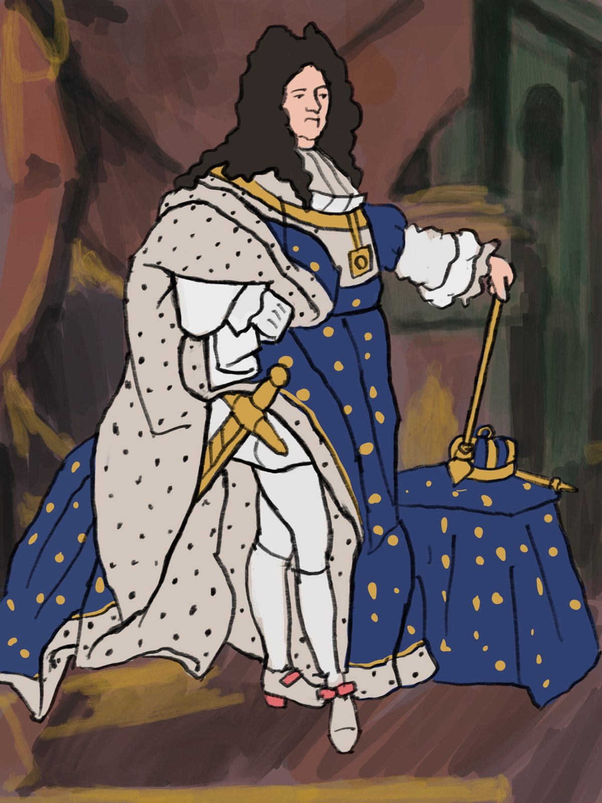
Study after Rigaud
A painted study of Hyacinthe Rigaud's 1701 portrait of King Louis XIV of France, with the ermine robe, the blue fleur-de-lis cloak, and the red heels. Royal portraits like this were propaganda, made to make one man look like the whole state. Redrawing it showed me how much of that power lives in the costume.
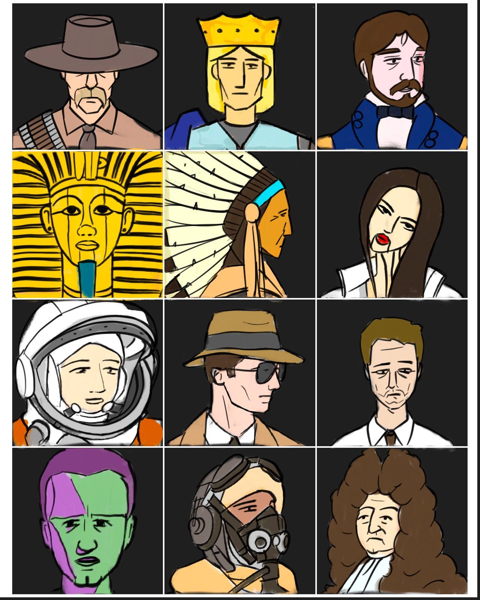
History Heads
Twelve heads from different times and places, including a cowboy, a medieval king, a 19th century gentleman, an Egyptian pharaoh's mask, a Plains chief in a feather headdress, an astronaut, a pilot in an oxygen mask, and a man in a Baroque wig. I drew them all in one flat style to practice designing faces fast, and to see how clothes and hair tell you when someone is from.
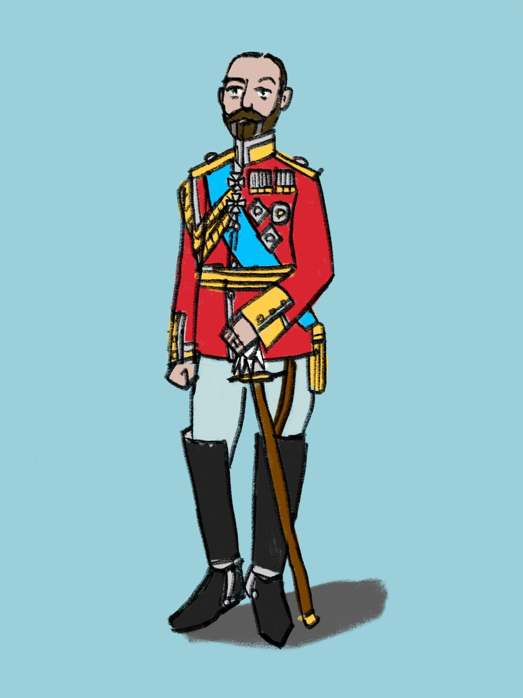
Dress Uniform
An early 20th century European royal in full military dress: red tunic, blue sash, medals, sword, and tall boots. I'm interested in how uniforms turned rulers into soldiers on paper, and this was practice in drawing period clothing accurately.
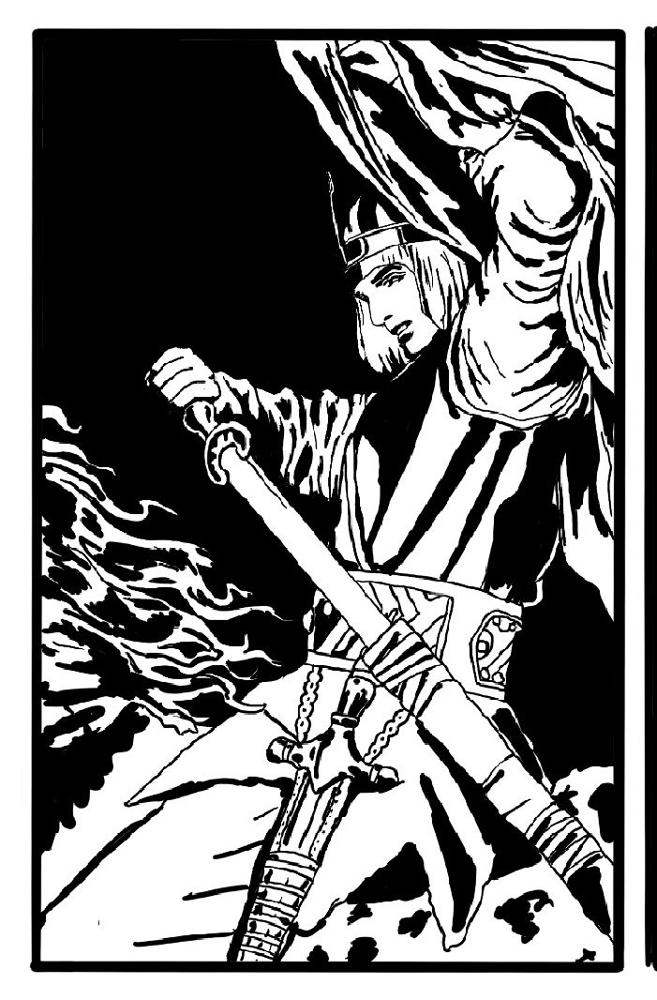
The Knight
A crusader knight drawing his sword under a heavy banner, in pure black and white. I wanted it to feel like a woodcut or an illustration from an old history book.
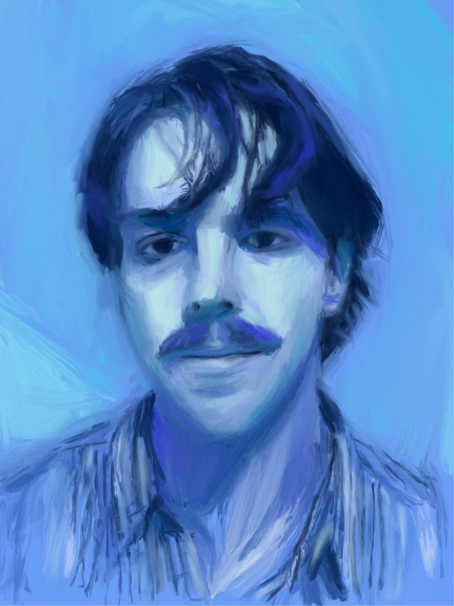
Self-Portrait in Blue
A self-portrait painted almost entirely in shades of blue, with rough, fast strokes in the hair and shirt. I wanted to see how far I could push one color and still have the face hold together.
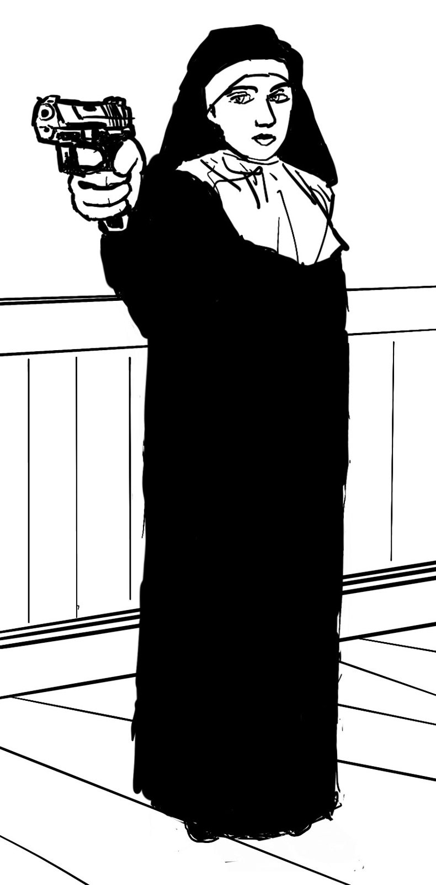
Sister
A nun in a full habit aiming a pistol, in stark black and white against a sketched room. I liked the clash between the costume and the action, like a still from a noir film.

Scream
A man screaming, built from thick black shapes with almost no middle tones. It was practice in extreme expression, and in how few lines a face really needs.

Bite
A pop art close-up of a vampire mid-snarl, with sharp flat shapes and heavy makeup. I wanted it to look like the cover of an old horror comic.

Electric
A guitarist caught in the middle of a solo, painted in deep reds over a rough sketch. I left the construction lines showing because I like the energy they add to the motion.
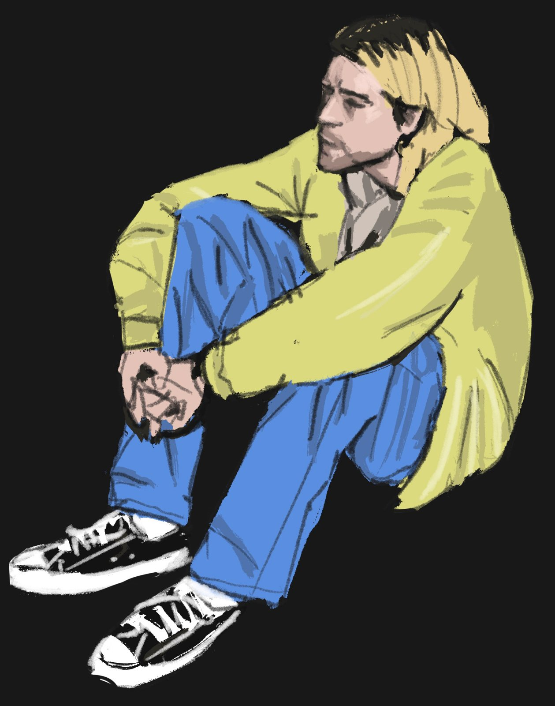
Sitting
A figure sitting on the floor in a yellow cardigan and worn-out sneakers, against flat black. The pose is quiet and closed off, and I tried to let the body language carry the whole mood.
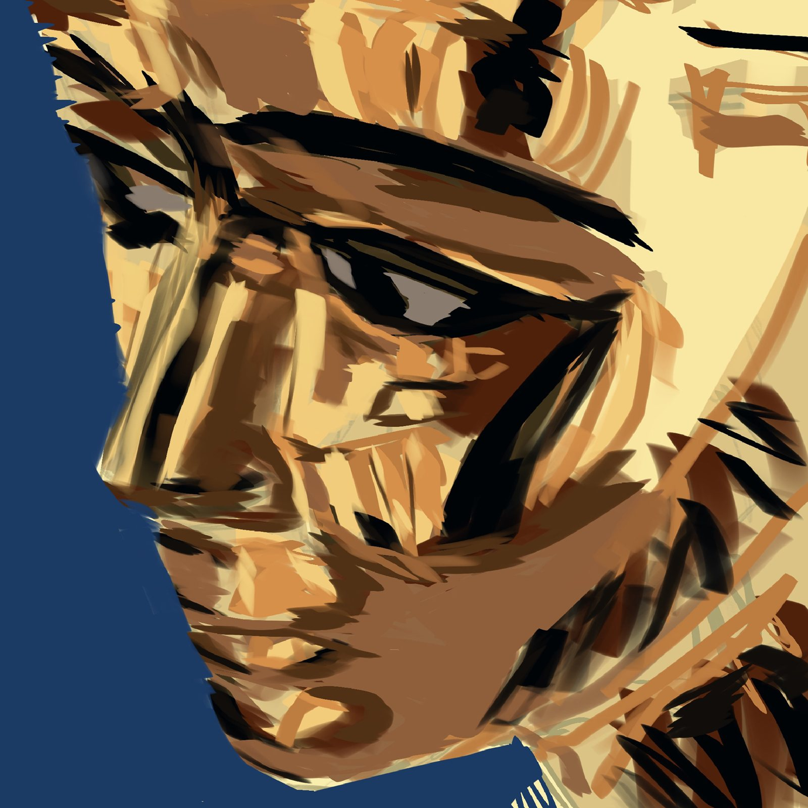
Portrait Studies
Three face studies, each trying a different approach: a tight crop built from bold gold and brown strokes, a soft gray line drawing, and a muted sepia painting. Studies like these are how I work on likeness, lighting, and mood.
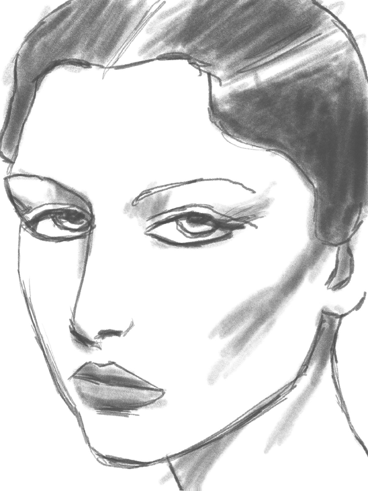
Portrait Studies
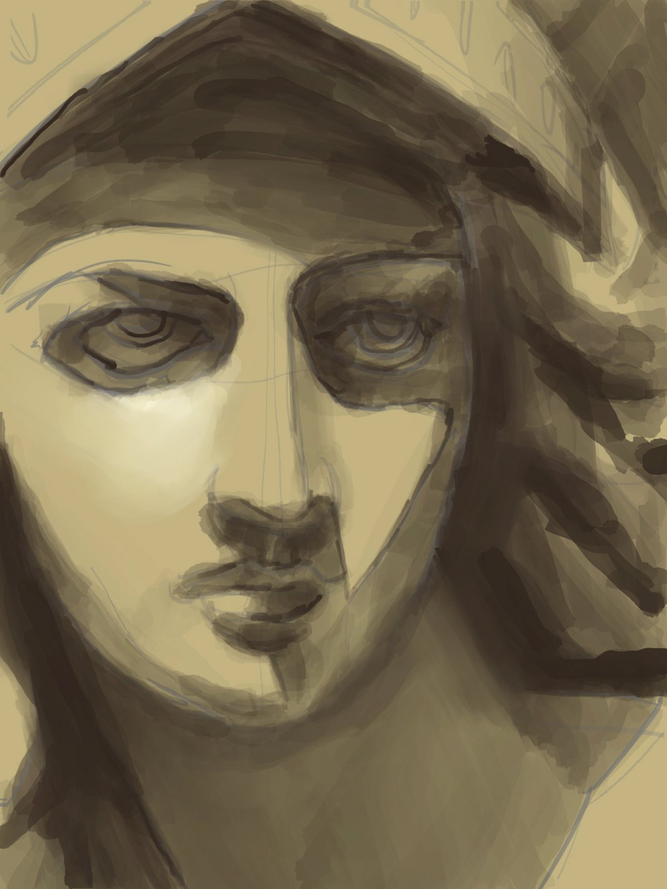
Portrait Studies
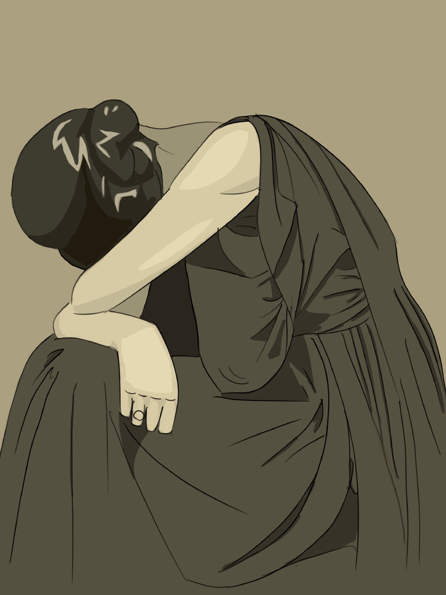
Gesture Studies
Two drawings about posture: a woman folded over in a heavy dark dress, and a young man bent all the way over, looking out upside down. I used flat color so all the attention goes to the shape of each pose.

Gesture Studies
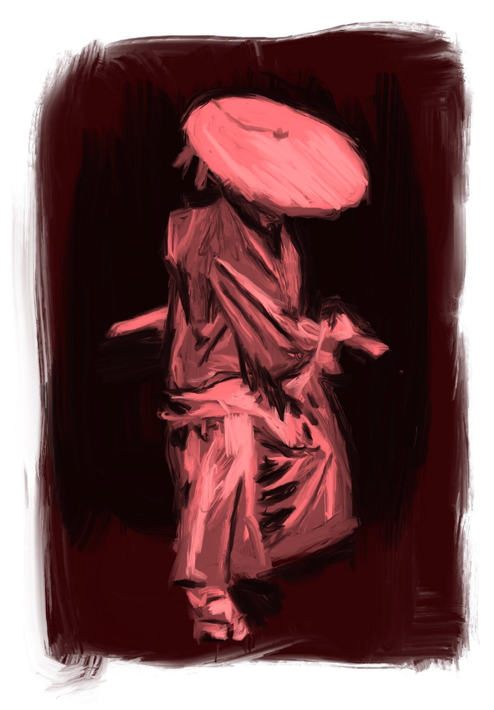
Red Study
A quick painted figure in a wide hat and loose clothes, done in reds on a dark background. It was an exercise in blocking in a whole figure using only light and shadow.
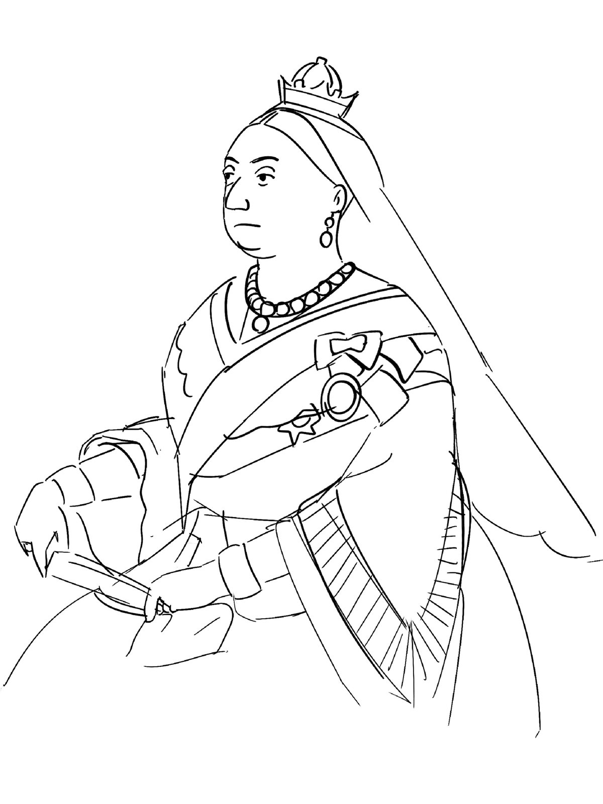
Royal Portrait Study
A 19th century queen in a mourning dress, small crown, and long veil, drawn from a portrait of the period. I left it as clean line art so I could focus on the folds of the dress and the lace.

Anatomy Layers
One figure shown three ways at once: skin, muscle, and skeleton. I made it to learn how the body is built under the surface, so my characters stand and move in a believable way.